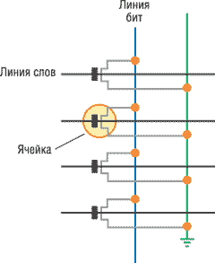
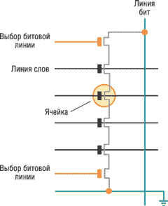
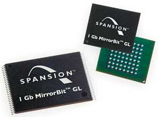
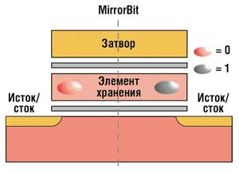
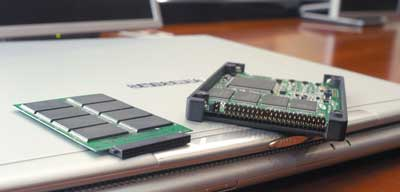
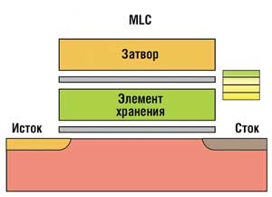

Многие эксперты сходятся во мнении, что одной из основных причин небывалого спроса на флэш-память стало развитие рынка мобильных коммуникаций, хотя и не только это. Как известно, флэш-память - это одна из разновидностей энергонезависимой памяти (nonvolatile memory). В основе работы запоминающей ячейки данного типа памяти лежит физический эффект Фаули-Нордхайма (Fowler-Nordheim), связанный с лавинной инжекцией зарядов в полевых транзисторах. Как и в случае EEPROM, содержимое флэш-памяти программируется электрическим способом, однако основное ее преимущество по сравнению с той же EEPROM - высокая скорость доступа и довольно быстрое стирание информации. Считается, что название "флэш" применительно к типу памяти переводится как "вспышка". На самом деле это не совсем так. Одна из версий появления этого термина состоит в том, что впервые в 1989-90 гг. специалисты компании Toshiba употребили слово flash в значении "быстрый, мгновенный" при описании своих новых микросхем.
В настоящее время можно выделить две основные структуры построения флэш-памяти: память на основе ячеек NOR (логическая функция ИЛИ-НЕ) и NAND (логическая функция И-НЕ). Структура NOR состоит из параллельно включенных элементарных ячеек хранения информации (рис. 1). Такая организация ячеек обеспечивает произвольный доступ к данным и побайтную запись информации. В основе структуры NAND лежит принцип последовательного соединения элементарных ячеек, образующих группы (по 16 ячеек в одной группе), которые объединяются в страницы, а страницы - в блоки (рис. 2). При таком построении массива памяти обращение к отдельным ячейкам невозможно. Программирование выполняется одновременно только в пределах одной страницы, а при стирании обращение происходит к блокам или к группам блоков.
|  |  |
| Рис. 1. Архитектура NOR.
|
Рис. 2. Архитектура NAND.
|
Ячейка традиционной флэш-памяти представляет собой транзистор с двумя изолированными затворами: управляющим и "плавающим". Важная особенность последнего - способность удерживать электроны, т. е. заряд. Кроме того, в ячейке имеются электроды, называемые "сток" и "исток". При программировании между ними, за счет воздействия положительного поля на управляющем затворе, создается канал - поток электронов. Некоторые из электронов благодаря наличию большей энергии преодолевают слой изолятора и попадают на плавающий затвор. На нем они могут храниться в течение нескольких лет. Определенный диапазон количества электронов (заряда) на плавающем затворе соответствует логической единице, а все, что больше его, - нулю. При чтении эти состояния распознаются путем измерения порогового напряжения транзистора. Для стирания информации на управляющий затвор подается высокое отрицательное напряжение, и электроны с плавающего затвора переходят (туннелируют) на исток. В технологиях различных производителей этот принцип работы может отличаться по способу подачи тока и чтения данных из ячейки.
Различия в организации структуры между памятью NOR и NAND находят свое отражение в их характеристиках. При работе со сравнительно большими массивами данных процессы записи/стирания в памяти NAND выполняются значительно быстрее, чем в памяти NOR. Поскольку 16 прилегающих друг к другу ячеек памяти NAND соединены последовательно, без контактных промежутков, достигается высокая плотность размещения ячеек на кристалле, что позволяет получить большую емкость при одинаковых технологических нормах. Последовательная организация ячеек обеспечивает высокую степень масштабируемости, что делает NAND-флэш лидером в гонке наращивания объемов памяти. В основе программирования флэш-памяти NAND лежит процесс туннелирования электронов. Ввиду того, что туннелирование осуществляется через всю площадь канала ячейки, интенсивность захвата заряда на единицу площади у памяти NAND ниже, чем в других технологиях флэш-памяти, в результате чего она имеет большее число циклов программирования/стирания. А поскольку туннелирование используется как для программирования, так и для стирания, энергопотребление микросхемы памяти оказывается низким. Программирование и чтение выполняются посекторно или постранично, блоками по 512 байт, для эмуляции общераспространенного размера сектора дисковых накопителей.
Стоит также обратить внимание на то, что в структуре флэш-памяти для хранения 1 бита информации задействуется только один элемент (транзистор), в то время как в энергозависимых типах памяти для этого требуется несколько транзисторов и конденсатор. Это позволяет существенно уменьшить размеры выпускаемых микросхем, упростить технологический процесс, а следовательно, снизить себестоимость. Но и 1 бит - далеко не предел. Еще в 1992 г. команда инженеров корпорации Intel начала разработку устройства флэш-памяти, одна ячейка которого хранила бы более одного бита информации. Уже в сентябре 1997 г. была анонсирована микросхема памяти Intel StrataFlash емкостью 64 Мбит, одна ячейка которой могла хранить 2 бита данных. Кроме того, сегодня существуют образцы с 4-битными ячейками. В такой памяти используется технология многоуровневых ячеек. Они имеют обычную структуру, а отличие заключается в том, что их заряд делится на несколько уровней, каждому из которых в соответствие ставится определенная комбинация битов. Теоретически прочитать/записать можно и более 4 бит, однако на практике возникают проблемы с устранением шумов и с постепенной утечкой электронов при продолжительном хранении.
В число крупнейших производителей флэш-памяти входят корпорации Samsung Electronics, Toshiba, Spansion (AMD-Fujitsu), Intel, STMicroelectronics. Одно из направлений совершенствования их продукции - уменьшение энергопотребления и размеров с одновременным увеличением объема и быстродействия флэш-памяти. В ближайшие годы производители флэш-памяти типа NAND намерены расширить рынок своих микросхем и начинить ими устройства, в которых сейчас используются жесткие диски или память других типов. В результате в память мобильного телефона можно будет записать несколько часов видео, а срок службы батарей в ноутбуках увеличится вдвое или более. Не исключено, что к концу десятилетия элементы NAND благодаря растущей емкости полностью вытеснят жесткие диски из некоторых моделей мини-ноутбуков.
Эволюция NAND отвечает закону Мура, т. е. каждые два года число транзисторов в микросхеме удваивается. Фактически же технология развивается еще быстрее. Если несколько лет назад элементы NAND изготавливались на устаревших производственных линиях, то теперь производители перевели этот процесс на самое современное оборудование, что ускорило развитие продуктов. Сейчас их емкость удваивается каждый год: например, за 4-Гбит микросхемами NAND 2005 г. последовали микросхемы емкостью 8 и 16 Гбит.
В качестве движущего фактора развития этой технологии выступает стоимость: элементы NAND дешевеют примерно на 35-45% в год. В прошлом году 1 Гбайт флэш-памяти обходился производителям устройств примерно в 45 долл. Эксперты полагают, что в этом году цена упадет до 30, в 2008-м - до 20, а к 2009 г. - до 9 долл. При цене 45 долл. за 1 Гбайт флэш-память оказывается почти в сто раз дороже памяти на жестких дисках, которую производители могут покупать примерно по 65 центов за гигабайт. Поэтому пока, даже при самых выгодных для флэш-технологии условиях сравнения, она неизбежно проигрывает по стоимости. С другой стороны, эта память дает заметный выигрыш в пространстве и потребляемой энергии.
Технология RobsonВ конце прошлого года специалисты корпорации Intel (http://www.intel.сom) продемонстрировали технологию Robson, сокращающую время загрузки системы и приложений. ПК с такой технологией извлекает данные и приложения не с жесткого диска, а из дополнительной карты флэш-памяти и ПО Intel. Флэш-память работает быстрее, чем жесткий диск, так что время загрузки сокращается. При этом у ноутбуков должен увеличиться срок службы батареи, так как меньше работает электродвигатель жесткого диска. Считается, что Robson уменьшит время ожидания с момента нажатия на кнопку включения ПК до момента, когда на нем можно начинать работать, а также время перехода ПК из состояния ожидания в активное состояние и время запуска приложений. Карта Robson может вмещать от 64 Мбайт до 4 Гбайт памяти. Чем больше емкость, тем больше данных или приложений можно хранить на карте для ускорения их загрузки. Intel разработала ПО для Robson, но сами кристаллы будут поставляться сторонними производителями. В Robson используется флэш-память типа NAND, которую производят Samsung, Toshiba и другие компании. Сама Intel пока выпускает флэш-память типа NOR, которая не применяется для операций "чтение-запись-стирание" подобного рода. |
Флэш-память Spansion
Вообще говоря, Spansion (http://www.spansion.com) - это всемирно известная марка FASL LLC, компании, созданной совместно AMD и Fujitsu для разработки и производства флэш-памяти. Сегодня FASL LLC - крупнейший мировой производитель флэш-памяти NOR. Решения Spansion в области флэш-памяти применяются в аппаратуре AMD и Fujitsu во всем мире. Устройства флэш-памяти Spansion (рис. 3) охватывают широкий диапазон плотности и свойств и пользуются спросом в различных областях промышленности: в числе ее потребителей - лидеры рынков беспроводных устройств, сотовой телефонии, автомобилей, сетевого оборудования, телекоммуникаций и потребительской электроники. Существует множество продуктов Spansion Flash, в том числе устройства на основе современной технологии MirrorBit, награжденные призами продукты семейства одновременного чтения/записи (SRW), сверхнизковольтные устройства флэш-памяти с питающим напряжением 1,8 В и устройства с пакетной и страничной организацией памяти. Напомним, что именно специалисты корпорации AMD оказались первыми в разработке микросхем флэш-памяти, которые допускали одновременную запись и чтение информации. Это стало возможным благодаря делению кристалла на два независимых банка памяти. При использовании памяти данного типа можно хранить управляющие коды в одном банке, а данные - в другом. В таком случае не требуется прерывать программу, если нужно выполнить операцию стирания или записи в банке данных.
|  | Рис. 3. Микросхемы флэш-памяти Spansion.
|
Технология Spansion MirrorBit (рис. 4) позволяет хранить два бита данных в одной ячейке памяти, что приводит к удвоению физической плотности памяти. Эта технология упрощает производство, что приводит к снижению издержек и повышению окупаемости. Ликвидируются как минимум 10% от общего количества шагов производственного процесса и 40% важнейших шагов производства по сравнению с технологией MLC NOR.
|  | Рис. 4. Архитектура MirrorBit.
|
В начале прошлого года была представлена технология MirrorBit второго поколения, оптимизированная для использования в беспроводных решениях с напряжением питания 1,8 В. Она была позиционирована как наилучшее в отрасли решение по соотношению цена/производительность, а также как дающая самый широкий среди всех флэш-технологий NOR набор функциональных возможностей и самые высокие показатели плотности. Заявлено, что эта технология позволяет создавать многофункциональные продукты, которые поддерживают одновременное выполнение операций чтения/записи, высокоскоростной интерфейс пакетного режима, систему безопасности Advanced Sector Protection и крайне низкий уровень энергопотребления.
Первенство технологии MirrorBit по соотношению цена/производительность достигается за счет фундаментальных ее преимуществ перед технологией MLC с плавающим затвором, обеспечивающих увеличенный объем выработки, отличное качество и высокую пропускную способность производственных линий. Объем выработки для высокоплотных микросхем (емкостью от 128 до 512 Мбит) увеличен почти на 30% по сравнению с технологией MLC с плавающим затвором, что значительно улучшает структуру себестоимости автономных и многокристальных продуктов. Уменьшенное на 40% число критических уровней маскирования снижает чувствительность к дефектам в процессе изготовления и повышает качество готового продукта. И наконец, пропускная способность заводских производственных линий выросла на 10% за счет упрощения и рационализации процесса изготовления.
Технология MirrorBit была разработала Spansion специально для клиентов, требующих максимального соотношения цена/производительность по всему спектру приложений флэш-памяти. В результате производители устройств все чаще заменяют микросхемы с плавающим затвором и однобитовыми или многоуровневыми ячейками в мобильных телефонах высшего класса, КПК, цифровых камерах, серверах, телеприставках, принтерах, сетевом и телекоммуникационном оборудовании, игровых системах и навигационных устройствах.
Беспроводные устройства Spansion линии GL с напряжением питания 1,8 В и 3 В применяются для хранения данных и выполнения приложений в мобильных телефонах начального, среднего и высшего классов. Беспроводные устройства линии PL с напряжением питания 3 В также используются в многочисленных мобильных телефонах, начиная от самых простых моделей и заканчивая мощными многофункциональными телефонами с цветными дисплеями высокого разрешения.
Беспроводные устройства Spansion линии WS оптимизированы для мобильных телефонов высшего класса, поддерживающих полифонические мелодии, оснащенных цветными дисплеями и фотокамерами высокого разрешения, а также большим объемом внутренней памяти для хранения мультимедийной информации, видеоклипов и фотографий. В линию WS входят высокопроизводительные микросхемы на 1,8 В с пакетным доступом, поддержкой одновременного чтения и записи и улучшенной защитой секторов. Емкость этих устройств составляет от 64 до 256 Мбит; они могут применяться для хранения данных и выполнения приложений.
В устройствах Spansion линии GL-N большая емкость сочетается с высокой пропускной способностью и безопасностью. Они отлично подходят для нового поколения устройств домашней и автомобильной электроники, средств связи и сетевого оборудования, а также для мобильных устройств. В линии GL-N выпускаются 512-, 256- и 128-Мбит модули, образующие единую платформу интеграции флэш-памяти в самых различных устройствах. Совместимость по ПО, посадочным местам и физическому интерфейсу сокращает затраты на разработку и модернизацию продукции, поскольку для перехода на более емкие модули не нужно менять печатные платы и адаптировать ПО.
Компании Spansion LLC и Taiwan Semiconductor Manufacturing Company (TSMC, http://www.tsmc.com) заключили соглашение, позволяющее начать массовое производство микросхем на основе 110-нм технологии Spansion MirrorBit. По условиям соглашения TSMC предоставляет производственные мощности для изготовления продукции Spansion - беспроводных устройств серий GL, PL и WS, а также интегрированных устройств серии GL. TSMC внедряет на своих предприятиях 110-нм производственный процесс Spansion специально для изготовления ее продукции. Первоначально технология Spansion MirrorBit 110 нм применяется на 200-мм кремниевых пластинах.
В начале осени прошлого года Spansion объявила о предоставлении клиентам образцов флэш-памяти формата Package-on-Package (PoP) для миниатюрных и в то же время многофункциональных мобильных телефонов, КПК, цифровых камер и MP3-плееров. Новое решение Spansion формата PoP представляет собой компактный модуль памяти со встроенным контроллером, отличающийся малым количеством контактов, простотой интеграции и высокой производительностью. Эти устройства в первую очередь оценили производители мобильных телефонов, которые смогли расширить набор функций новых моделей без увеличения их массы и размера.
Высота новых устройств PoP Spansion, состоящих из модуля памяти и контроллера в вертикальной компоновке, составляет всего 1,4 мм. Устройства PoP отличаются высокой гибкостью - на совмещение любого модуля памяти с любым контроллером требуется буквально несколько недель. Решения PoP позволяют подобрать идеальное сочетание модуля памяти и контроллера для каждой задачи, а упрощенная процедура тестирования означает дополнительную экономию средств. Spansion придерживается системного подхода при разработке и выпуске флэш-памяти и стандартизации устройств PoP, принимает активное участие в работе ассоциации JEDEC и возглавляет группу JC11.2, отвечающую за рекомендации по разработке устройств PoP. Кроме того, компания прилагает максимум усилий к распространению устройств PoP, а также тесно сотрудничает с производителями наборов микросхем для обеспечения совместимости между ними.
В прошлом году производственные мощности Spansion были рассчитаны на выпуск 8-кристальных интегрированных модулей со 128-контактной основой формата 12х12 мм с шагом в 0,65 мм. За счет малой длины дорожек и низкой электрической емкости шины в устройствах PoP удается обойти ограничения на чистоту сигналов и точность синхронизации, характерную для памяти DDR с рабочей частотой 133 МГц. Архитектура, выбранная Spansion, позволяет обойтись меньшим количеством контактов и отказаться от передачи данных между модулем памяти и контроллером по поверхности печатной платы, что значительно упрощает структуру интегрированного устройства.
В устройствах Spansion PoP также применяется технология MirrorBit. Архитектура ORNAND открывает новые возможности для развития этой технологии. Она разрабатывается специально для беспроводных устройств и вспомогательных процессоров, которым требуются большие объемы данных и контроллеры, оптимизированные под выполнение конкретных задач.
Первые образцы одномодульных гигабитных устройств флэш-памяти для встроенных систем появились уже в октябре прошлого года. Гигабитные модули MirrorBit GL стали первыми устройствами, изготовленными по 90-нм технологии MirrorBit, и на момент выпуска обладали рекордной удельной емкостью среди одномодульных устройств флэш-памяти NOR. Они могут применяться для хранения данных и исполняемого кода в разнообразных встроенных системах, таких, как автомобильные системы навигации, устройства связи, игровые устройства и промышленные роботы.
Гигабитные устройства MirrorBit GL входят в ту же линию продукции, что и единственные в мире 512-Мбит модули флэш-памяти NOR. Перевод технологии MirrorBit на 90-нм производственный процесс и удвоение плотности флэш-памяти NOR позволили Spansion снизить стоимость компонентов, поскольку теперь разработчики встроенных систем могут обойтись одним одномодульным устройством вместо нескольких независимых устройств или дорогих многослойных устройств с несколькими модулями низкой емкости. Благодаря тому, что новинка продолжила существующую линию устройств, клиентам Spansion очень просто переходить на новые модули, это не требует никаких изменений в архитектуре уже разработанных встроенных систем.
Гигабитные модули Spansion MirrorBit относятся к семейству Spansion GL, в которое входят модули емкостью от 16 до 512 Мбит. Выпуском гигабитного устройства компания Spansion расширила ассортимент своей продукции от емкости в 1 Мбит до 1 Гбит. Вся новая продукция совместима с модулями предыдущих поколений (вплоть до 2 Мбит) на уровне программного интерфейса, аппаратного интерфейса и посадочных мест, что позволяет устанавливать их в старые платы. Гигабитные модули MirrorBit GL на уровне аппаратного интерфейса и посадочного места совместимы со всеми устройствами MirrorBit GL-M (230-нм техпроцесс), MirrorBit GL-A (200-нм) и MirrorBit GL-N (110-нм), а также с более старыми устройствами Fujitsu и AMD LV вплоть до тех, что производились по процессу 320 нм. Физическое исполнение модулей отвечает требованиям стандартов JEDEC. Рабочее напряжение гигабитных модулей MirrorBit GL составляет 3 В, скорость произвольного доступа при чтении - 110 нс, скорость последовательного доступа при чтении - 25 нс, емкость страничного буфера - 8 слов.
Гигабитные модули MirrorBit GL позволяют либо выполнять код непосредственно с флэш-памяти, либо копировать его с высокой скоростью в оперативную память. Они основаны на архитектуре NOR, которая гарантирует отсутствие плохих секторов, устраняет необходимость в проверке четности ECC и поддерживает стандартный параллельный интерфейс. Эти модули позволяют значительно упростить структуру и снизить стоимость встроенных систем. Для приложений, предъявляющих особые требования к защите, немаловажно, что в мегабитных модулях MirrorBit GL поддерживается технология улучшенной защиты секторов ASP (Advanced Sector Protection). Технология ASP позволяет разработчикам надежно защитить программные алгоритмы и параметры 64-разрядным ключом. Защита может устанавливаться индивидуально для каждого сектора с кодом или данными. Помимо этого, модулям можно присваивать электронные серийные номера (ESN). Номера ESN удобны для удаленной идентификации устройств, управления уровнем обслуживания и ведения журнала доступа для последующей тарификации. Эти средства защиты помогают обезопасить устройства от вредоносного кода и вирусов, а также от несанкционированного доступа.
Флэш-память Samsung
Занимая лидирующие позиции на рынке флэш-памяти NAND с 2002 г., Samsung Electronics (http://www.samsung.com) продолжает наращивать инвестиции в данное направление. Основная цель этих капиталовложений - ежегодное двукратное увеличение емкости носителей информации, что позволит и в дальнейшем сохранять лидирующие позиции и стимулировать рынок в направлении увеличения объемов памяти и предложения более приемлемых цен на продукты. В корпорации ожидают, что в дальнейшем флэш-память типа NAND будет применяться не только в цифровых фотокамерах, MP3-плеерах и 3G-телефонах, но и в других мобильных продуктах и цифровой потребительской электронике. Это обусловлено тем, что флэш-память данного типа признается наиболее надежным носителем для хранения данных повышенной емкости и отвечает самым широким потребительским запросам. Технология OneNAND объединяет в одной микросхеме ячейки флэш-памяти NAND, высокоскоростной SRAM-буфер и логический интерфейс, причем это единственный тип NAND-памяти, разработанный для сопряжения с флэш-памятью типа NOR. Вдобавок такая конструкция минимизирует потери хранящихся данных при отключении питания.
Кристаллы флэш-памяти нового типа, отличающиеся высокими показателями скорости чтения при расширенных возможностях хранения данных, Samsung Electronics выпустила еще в ноябре 2004 г. Гигабитная микросхема OneNAND Flash, производимая по 90-нм технологии, сочетала в себе свойства основных архитектур флэш-памяти - NAND и NOR. От памяти NOR новый тип унаследовал высокую скорость чтения и записи данных. Кроме того, OneNAND позволяет хранить и быстро копировать в оперативную память исполняемый код, что характерно для микросхем NAND. Напомним, что сходный принцип положен в основу кристаллов ORNAND, разработанных компанией Spansion. Samsung Electronics ориентировала кристаллы OneNAND на смартфоны, снабженные встроенными фотокамерами и способные исполнять приложения.
Весной прошлого года корпорация объявила о создании модуля флэш-памяти OneNAND объемом 4 Гбит, предназначенного для мультимедийных телефонов. Помимо высокой емкости, он отличается ультракомпактными размерами, высокой производительностью и низким энергопотреблением. Новый кристалл OneNAND имеет напряжение питания 1,8 В, и его энергопотребление по сравнению c памятью других типов, работающей при напряжении 3,3 В, почти вдвое ниже. Размеры нового чипа - 11х13х1,4 мм - существенно меньше, чем у конкурирующих устройств мобильной памяти той же емкости. Эти микросхемы отличаются высокой скоростью чтения - 108 Мбайт/с, что в четыре раза выше, чем у обычной NAND-памяти, а также скоростью записи - 10 Мбайт/с, что в 60 раз превосходит скорость записи флэш-памяти типа NOR. Для примера: на 4-Гбит модуле можно хранить 250 снимков, полученных с помощью 5-Мпиксел камеры сотового телефона, или более 120 музыкальных файлов.
С технической точки зрения 4-Гбит память OneNAND представляла собой четыре кристалла памяти OneNAND объемом 1 Гбит каждый, собранные в четырехслойном пакете (Quad Die Package). Кристаллы производились с использованием 90-нм техпроцесса, запущенного еще в ноябре 2004 г. Примерно в то же время южнокорейская корпорация сообщила о начале эксплуатации новой линии по производству микросхем флэш-памяти NAND. Мощности Line 14, запущенной на месяц раньше запланированного срока, предназначались для изготовления 4-Гбит модулей по нормам 70-нм технологии, а также 2-Гбит модулей по 90-нм техпроцессу.
По утверждениям представителей Samsung, размер ячейки микросхем памяти, произведенных по 70-нм технологии, составляет всего 0,025 мм2. При этом скорость последовательной записи примерно на 50% выше аналогичного показателя для микросхем емкостью 2 Гбит, изготовленных по 90-нм техпроцессу. Таким образом, теоретически новые 4-Гбит кристаллы флэш-памяти NAND могут использоваться для записи видео высокого разрешения в режиме реального времени. Новая линия на начальном этапе позволяла выпускать порядка 4 тыс. пластин в месяц, а к концу прошлого года ежемесячный объем производства составлял 15 тыс. пластин. Согласно данным Gartner Dataquest, доля 4-Гбит микросхем NAND к концу года составила около 30% от общего объема рынка NAND-памяти, оцениваемого в 8 млрд долл. Примечательно, что Samsung ежегодно удваивает емкость NAND-кристаллов начиная с 1999 г.
ПО XSR (eXtended Sector Remapper), разработанное в Samsung Electronics, оптимизирует производительность устройств флэш-памяти OneNAND для телефонов 3G, карманных компьютеров, переносных игровых систем и цифровых камер. Разработано пять различных программ, каждая из которых приспособлена к своей операционной среде, три из них созданы на базе Samsung XSR. PocketStore II оптимизирует использование OneNAND в мобильной среде Microsoft, Unistore используется на платформе Symbian, а TFS4 (Transactional File System 4) разработана для ОС реального времени (Real Time Operating Systems). Кроме того, Samsung предлагает программу RFS (Robust File System) для ОС Linux, а также версию TFS-4-Light для МР3-плееров. За счет использования Samsung XSR скорость чтения данных достигает 30 Мбайт/с, а скорость записи - 9 Мбайт/с. Это ПО упрощает процесс разработки высокопроизводительных, недорогих и экономичных портативных мультимедиа-систем.
Летом прошлого года Samsung Electronics завершила разработку первого твердотельного жесткого диска (Solid State Disk, SSD), созданного на основе флэш-памяти типа NAND, для применения в персональных и мобильных ПК (рис. 5). Как известно, твердотельные диски на базе флэш-памяти NAND - это носители информации, характеризующиеся низким энергопотреблением и малой массой и предназначенные для ноутбуков, субноутбуков и планшетных ПК (Tablet PC). Используя собственные микросхемы флэш-памяти NAND емкостью 8 Гбит - максимальной плотности из выпускаемых на тот момент полупроводниковой промышленностью в мире, Samsung Electronics получила возможность создавать твердотельные жесткие диски емкостью до 16 Гбайт (для сравнения: наиболее распространенная емкость шпиндельных жестких дисков в ноутбуках равна 40 Гбайт).
|  | Рис. 5. Твердотельный жесткий диск Samsung.
|
Энергопотребление SSD составляет менее 5% от показателей традиционных жестких дисков, что увеличивает более чем на 10% время автономной работы портативных ПК. Необходимо также отметить, что SSD на базе флэш-памяти NAND примерно вдвое легче обычных жестких дисков. Производительность SSD превосходит аналогичные показатели шпиндельных жестких дисков сопоставимого размера более чем на 150%. Скорость чтения с такого диска составляет 57 Мбайт/с, а скорость записи на него - 32 Мбайт/с.
В связи с отсутствием движущихся элементов твердотельные жесткие диски Samsung характеризуются минимальным уровнем шума и тепловыделения. Более того, SSD обеспечивают сверхвысокую надежность хранения данных и отлично зарекомендовали себя в условиях экстремальных температур и влажности, что позволяет применять такие диски в промышленности и военной технике.
Для совместимости твердотельные жесткие диски исполнены в корпусах, внешне напоминающих обычные жесткие диски. Samsung выпустила полную линейку твердотельных дисков: SSD формата 2,5 дюйма имели 16 кристаллов флэш-памяти NAND емкостью 4 Гбит или 8 Гбит и обеспечивали дисковое пространство 8 Гбайт или 16 Гбайт соответственно. 1,8-дюйм диски также были выпущены в двух модификациях - на 4 и 8 Гбайт. Твердотельные жесткие диски открыли новые ниши в индустрии хранения данных, особенно для мобильных устройств, не требующих высокой емкости.
| На выставке CeBIT'2006 Samsung Electronics продемонстрировала прототип ноутбука с твердотельным накопителем на основе флэш-памяти емкостью 32 Гбайт. В ходе демонстрации загрузка ОС прошла на нем за 18 с, в то время как у ноутбука с аналогичными техническими характеристиками, но оснащенного жестким диском, - за 31 с. В корпусе компьютера твердотельный накопитель занимает столько же места, сколько и 1,8-дюйм винчестер. |
Кристаллы NAND флэш-памяти емкостью 4 Гбит Samsung Electronics впервые анонсировала в сентябре 2003 г. Следуя принятой модели роста емкости модулей памяти (двукратное увеличение емкости каждые 12 месяцев), представленной доктором Чанг Гю Хвангом, президентом и исполнительным директором Samsung Electronics Semiconductor, последовательно выпускались пять поколений флэш-памяти NAND: 256 Мбит в 1999 г., 512 Мбит в 2000-м, 1 Гбит в 2001-м, 2 Гбит в 2002-м, 4 Гбит в 2003-м, 8 Гбит в 2004-м и 16 Гбит в 2005 г. Использование 70-нм технологического процесса при производстве 4-Гбит микросхем флэш-памяти типа NAND позволяет корпорации производить самые маленькие по размеру ячейки памяти - площадью 0,025 мкм2. Своим успешным развитием 70-нм технологический процесс обязан применению литографического оборудования, которое использует коротковолновые источники света на основе фторида аргона (ArF), позволяющие добиться необходимой точности размещения элементов на кристалле.
Микросхемы, произведенные по 70-нм технологии, демонстрируют высокие скоростные характеристики: скорость записи у них составляет 16 Мбайт/с, на 50% лучше, чем у современных 2-Гбит микросхем, выполненных по 90-нм технологии, что позволяет применять данный тип памяти для записи в реальном времени видеосигнала высокой четкости. Samsung Electronics также анонсировала выпуск первой 300-мм кремниевой пластины на новой технологической линии N14 на месяц раньше запланированного срока. Линия предназначена для выпуска 4-Гбит (70-нм технология) и 2-Гбит (90-нм) кристаллов флэш-памяти типа NAND. В конце 2005 г. корпорация опробовала технологический процесс при нормах 50 нм для производства 16-Гбит кристаллов NAND флэш-памяти; массовый выпуск этих модулей намечен на вторую половину текущего года.
Флэш-память Intel
Флэш-память NOR, разработанная корпорацией Intel в 1988 г., представляла собой энергонезависимую перезаписываемую микросхему памяти, нашедшую широкое применение в мобильных телефонах. В 2003 г. Intel представила новую технологию флэш-памяти, полное название которой звучало как StrataFlash Wireless Memory System. Она позволяла уменьшить объем модулей памяти, используемых в КПК и сотовых телефонах, а также снизить энергопотребление и стоимость флэш-памяти в упомянутых устройствах. В технологии StrataFlash были использованы элементы двух разных типов флэш-памяти: NAND и NOR. Как известно, технология NAND предназначается для хранения данных на внешних флэш-картах, а NOR подходит для хранения небольших программ для мобильных устройств. Доступ к флэш-памяти NOR осуществляется без проверки ошибок, поскольку в этом нет необходимости. Флэш-память NAND не имеет такой надежности, как NOR-память, но она дешевле в производстве, а, кроме того, чтение и запись данных в память NAND происходит намного быстрее, чем в NOR. Это быстродействие дополнительно увеличивается за счет использования в комплекте с этой памятью модулей ОЗУ. В StrataFlash инженеры Intel объединили два типа флэш-памяти, оптимизировав ее и для хранения данных, и для записи программ. Первый модуль памяти StrataFlash состоял из нескольких кристаллов, часть из которых была модулями ОЗУ, а другая представляла собой непосредственно флэш-память.
В начале прошлого года были представлены первые образцы продукции Sibley, предназначенной для рынка мобильных телефонов. Отметим, что, согласно прогнозам iSuppli, годовой объем продаж 3G-телефонов к 2008 г. достигнет 240 млн штук при ежегодном росте в 87%. Sibley - это кодовое наименование первого многоуровневого (Multi-Level Cell, MLC) модуля флэш-памяти NOR, который производится по 90-нм производственной технологии Intel. Семейство Sibley призвано обеспечивать высокую скорость считывания с кодированием "ожидания нуля" на частоте 108 МГц. Кроме того, скорость записи у такой памяти достигает 500 Кбайт/с, что важно для сохранения мультимедийных изображений в современных мобильных телефонах. Новое семейство продукции позволяет увеличить плотность флэш-памяти NOR благодаря использованию единого модуля емкостью 512 Мбайт. Обеспечивается поддержка различных интерфейсов памяти, что дает производителям мобильных телефонов большой уровень гибкости при проектировании.
Четвертое поколение флэш-памяти Intel с многоуровневыми ячейками (рис. 6) нацелено на ОЕМ-компании, работающие в области интегрированных решений, которым требуется высокая производительность и компактность устройств флэш-памяти. Это сочетание необходимо для самых разных платформ - от цифровых камер и бытовой электроники до сетевых маршрутизаторов, коммутаторов и КПК.
|  | Рис. 6. Архитектура многоуровневой ячейки.
|
Осенью прошлого года Intel объявила о начале массовых поставок первых модулей MLC флэш-памяти NOR, производимых по 90-нм технологии. Новые модули Intel StrataFlash Cellular Memory (M18) обладают более высокой производительностью, более компактны и потребляют меньше энергии, чем предыдущие модули, производимые по 130-нм технологии, что полнее удовлетворяет потребности разработчиков мобильных телефонов, оснащенных камерами и цветными экранами, поддерживающих Интернет-браузеры, воспроизведение видео и т. д.
Модули M18 отличаются очень высокой скоростью чтения, благодаря чему могут использовать шину, работающую с той же частотой, что и наборы микросхем для мобильных телефонов следующего поколения (до 133 МГц). Это ускоряет выполнение пользовательских приложений, поскольку взаимодействие набора микросхем и памяти происходит быстрее, чем в модулях, выпускаемых по 130-нм технологии. Благодаря скорости записи, достигающей 0,5 Мбайт/с, модули M18 поддерживают трехмегапиксельные камеры и воспроизведение видео в формате MPEG4. OEM-производителям эти модули выгодны тем, что их программирование в заводских условиях выполняется в три раза быстрее, чем модулей, производимых по 130-нм технологии, что способствует снижению производственных расходов. На программирование модулей M18 и стирание записанных в них данных расходуется соответственно в три и два раза меньше энергии по сравнению с модулями предыдущего поколения, к тому же они поддерживают новый режим работы Deep Power Down, который дополнительно продлевает срок работы устройства без перезарядки аккумулятора. Кроме того, модули M18 отличаются повышенной плотностью монтажа: Intel предлагает микросхемы памяти объемом 256 и 512 Мбит, а также стандартные стековые решения объемом до 1 Гбит. Стандартные стеки Intel объединяют технологии NOR и RAM и поддержку нескольких архитектур шин, позволяя OEM-производителям быстрее разрабатывать новые устройства.
Чтобы помочь разработчикам ускорить интеграцию новых карманных устройств, корпорация Intel бесплатно предоставляет им ПО Intel Flash Data Integrator (Intel FDI) следующего поколения. ПО Intel FDI v7.1 обеспечивает открытую архитектуру, облегчающую интеграцию файловой системы флэш-памяти с ОС реального времени, и три новые функции, расширяющие возможности разработчиков: это Mountable USB, поддержка нескольких томов и поддержка буферов RAM.
Отметим также, что Intel первой в индустрии наладила выпуск многоуровневых микросхем флэш-памяти класса NOR емкостью 1 Гбит для мобильных устройств, используя передовую 65-нм производственную технологию.
Intel и Micron объединяют усилияКорпорации Intel и Micron Technology (http://www.micron.com) создали новую компанию для производства флэш-памяти типа NAND. Объединяя опыт и производственные технологии, Intel и Micron рассчитывают усилить свою конкурентоспособность на прибыльном рынке флэш-памяти NAND и уже получили заказ от первого крупного клиента, корпорации Apple Computer. Модули флэш-памяти типа NAND по-прежнему пользуются большим спросом, поскольку они применяются в самых разных электронных устройствах, в том числе в музыкальных плеерах и цифровых камерах. Новая компания, получившая название IM Flash Technologies, будет выпускать для Intel и Micron флэш-память, предназначенную для рынков бытовой электроники, сменных устройств хранения и карманных средств связи. В создание нового совместного предприятия Intel и Micron вложили примерно по 1,2 млрд долл., причем в ближайшие три года компании планируют инвестировать в нее еще столько же. Создание IM Flash планируется завершить к концу года; Intel и Micron уже заключили отдельные долговременные соглашения на поставку для корпорации Apple значительных объемов флэш-памяти типа NAND, которые будут выпущены новой компанией. Как сообщается, 51% акций IM Flash будут принадлежать Micron, а 49% - Intel. Первые партии модулей флэш-памяти NAND будут выпущены на фабриках в Бойсе (шт. Айдахо), Манассасе (шт. Вирджиния) и Лехи (шт. Юта).
|